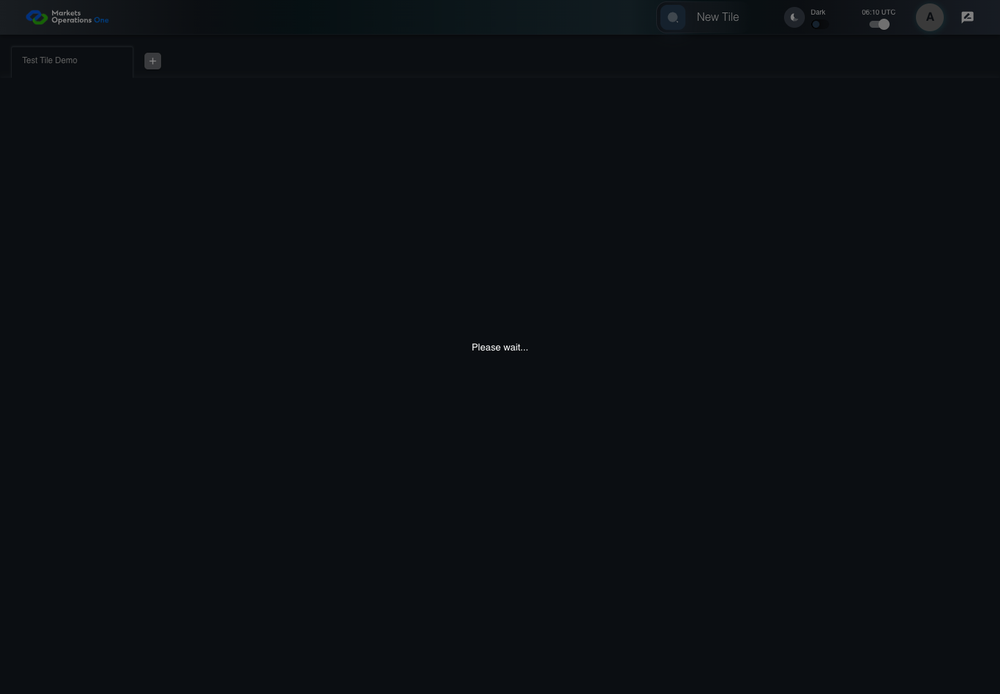
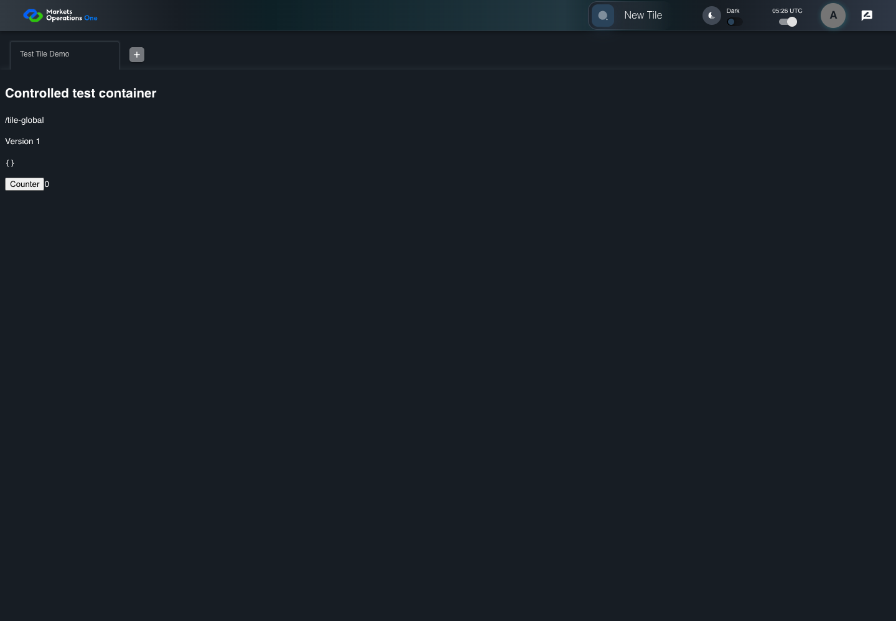
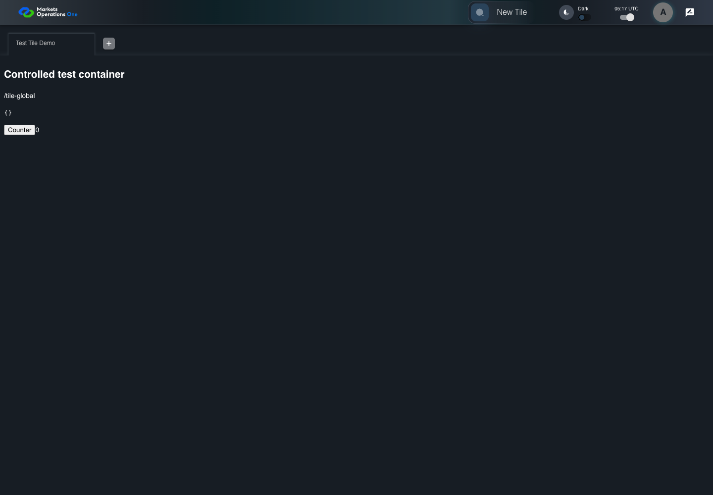

All canonical cases
UI-MFE-002: Replace splash after module load Business acceptance remains unverified. Owner: unknown. Review the canonical definition and fixture limits before acceptance.
Latest local result: PASS Business acceptance: NOT_ESTABLISHED.
The latest local result describes execution. The historical definition review assesses the case design before execution.
Latest step screenshot evidence: COMPLETE . 5/5 canonical steps have execution screenshots.
Canonical Gherkin definition . Definition version: 2. SHA-256: 06d5cfca6613290d6fbca789156c949123e378a89812adb782ddfa73dd950052.
Historical definition review (preflight): UNVERIFIED A definition review FAIL can coexist with local PASS. The definition failed preflight quality checks.
This historical review does not change the latest execution result. Resolve definition gaps before business acceptance.
Canonical Gherkin steps Feature: Module composition
@UI-MFE-002
Scenario: Replace splash after module load
Given User A is authenticated as fixture UI-USER-01 with the case-specific permissions
And the test container import is pending in W1
When the declared test fixture resolves the pending container import for W1
Then the declared controlled container marker is visible inside the W1 tabpanel
And text with text "Please wait..." inside the W1 tabpanel is absent Acceptance and evidence limits: NO_COMPLETE_REAL_APPLICATION_BINDING, CANONICAL_REVIEW_OR_EVIDENCE_UNRESOLVED.
Planned essential canonical frames: 2. Plan completeness requires separate review.
Latest attempt UI-MFE-002 actual module lifecycle PASS · application/run-050/ui-mfe-002-actual-module-lifecycle-eb6c7eb902c2-attempt-1 · ACTUAL_APPLICATION_LOCAL_SERVICES
Actual React shell and error boundary. Controlled catalog and SystemJS container; held imports, rejected imports, and render exceptions. No real identity or business tenant execution.
2026-10-22T06:10:19.634Z to 2026-10-22T06:10:21.336Z
Assertions and result · Artifact manifest · Exact run inputs and source hashes
Result SHA-256: 4c63bc802173f52d1405c64f9b5726e029e5a3ef0af9bc83948ef228ce4be034 Playwright trace
Machine observations Screenshot capture: CAPTURED. Named frames: 6.
Step screenshot evidence: COMPLETE. 5/5 canonical steps have execution screenshots.
Canonical step timeline Given User A is authenticated as fixture UI-USER-01 with the case-specific permissions
1. step-01 Visible state after step 1: Given User A is authenticated as fixture UI-USER-01 with the case-specific permissions
2026-10-22T06:10:20.266Z · 1440×1000cbae80fd2866edae96e1dd63a09397ba5762ab8a471e802cbb366337c399a488 And the test container import is pending in W1

2. step-02 Visible state after step 2: And the test container import is pending in W1
2026-10-22T06:10:20.981Z · 1440×1000e60b1e15629d1ea6984ed7d5e42b1dbf98053d79f16e1fd9a5d98c7b2e176384 When the declared test fixture resolves the pending container import for W1
3. step-03 Visible state after step 3: When the declared test fixture resolves the pending container import for W1
2026-10-22T06:10:21.018Z · 1440×1000ce2128c820caa1998a18f57865f361ed053f60b740baaa48001c6c097b0b4d62 Then the declared controlled container marker is visible inside the W1 tabpanel
4. step-04 Visible state after step 4: Then the declared controlled container marker is visible inside the W1 tabpanel
2026-10-22T06:10:21.050Z · 1440×1000ce2128c820caa1998a18f57865f361ed053f60b740baaa48001c6c097b0b4d62 And text with text "Please wait..." inside the W1 tabpanel is absent
5. step-05 Visible state after step 5: And text with text "Please wait..." inside the W1 tabpanel is absent
2026-10-22T06:10:21.083Z · 1440×1000ce2128c820caa1998a18f57865f361ed053f60b740baaa48001c6c097b0b4d62 Additional named frames 6. final-result The final visible state after the named test assertions.
2026-10-22T06:10:21.150Z · 1440×1000ce2128c820caa1998a18f57865f361ed053f60b740baaa48001c6c097b0b4d62 Screenshots establish visible state only. Assertions and traces support functional claims.
Earlier attempt history (2) Earlier attempt PASS (superseded by latest PASS) UI-MFE-002 actual module lifecycle PASS · application/run-033/ui-mfe-002-actual-module-lifecycle-eb6c7eb902c2-attempt-1 · ACTUAL_APPLICATION_LOCAL_SERVICES
Actual React shell and error boundary. Controlled catalog and SystemJS container; held imports, rejected imports, and render exceptions. No real identity or business tenant execution.
2026-10-22T05:26:28.723Z to 2026-10-22T05:26:32.758Z
Assertions and result · Artifact manifest · Exact run inputs and source hashes
Result SHA-256: 4b6f08ed25826aebb3b841ddf3aa5f04592e91e72c379c9f3ef6b1b80ae9ef54 Playwright trace
Machine observations Screenshot capture: CAPTURED. Named frames: 6.
Step screenshot evidence: COMPLETE. 5/5 canonical steps have execution screenshots.
Canonical step timeline Given User A is authenticated as fixture UI-USER-01 with the case-specific permissions
1. step-01 Visible state after step 1: Given User A is authenticated as fixture UI-USER-01 with the case-specific permissions
2026-10-22T05:26:30.554Z · 1440×1000cc86f787fb02d19e015d0e6392901ffcf03ba75523bd1d52d52c975938063f06 And the test container import is pending in W1
2. step-02 Visible state after step 2: And the test container import is pending in W1
2026-10-22T05:26:31.360Z · 1440×1000288a99f6cb3849ab2cf9c06ea5fb801c1aa88646158cd6b24dd0fd7de2049ec5 When the declared test fixture resolves the pending container import for W1

3. step-03 Visible state after step 3: When the declared test fixture resolves the pending container import for W1
2026-10-22T05:26:31.417Z · 1440×100029dfd6f4edaee08e4b68ec21e74fa95d7b8aecd7aa19974e01c4fe230d947ce4 Then the declared controlled container marker is visible inside the W1 tabpanel
4. step-04 Visible state after step 4: Then the declared controlled container marker is visible inside the W1 tabpanel
2026-10-22T05:26:31.491Z · 1440×100029dfd6f4edaee08e4b68ec21e74fa95d7b8aecd7aa19974e01c4fe230d947ce4 And text with text "Please wait..." inside the W1 tabpanel is absent
5. step-05 Visible state after step 5: And text with text "Please wait..." inside the W1 tabpanel is absent
2026-10-22T05:26:31.550Z · 1440×100029dfd6f4edaee08e4b68ec21e74fa95d7b8aecd7aa19974e01c4fe230d947ce4 Additional named frames 6. final-result The final visible state after the named test assertions.
2026-10-22T05:26:31.668Z · 1440×100029dfd6f4edaee08e4b68ec21e74fa95d7b8aecd7aa19974e01c4fe230d947ce4 Screenshots establish visible state only. Assertions and traces support functional claims.
Earlier attempt PASS (superseded by latest PASS) UI-MFE-002 actual module lifecycle PASS · application/run-012/ui-mfe-002-actual-module-lifecycle-eb6c7eb902c2-attempt-1 · ACTUAL_APPLICATION_LOCAL_SERVICES
Actual React shell and error boundary. Controlled catalog and SystemJS container; held imports, rejected imports, and render exceptions. No real identity or business tenant execution.
2026-10-22T05:17:05.056Z to 2026-10-22T05:17:07.529Z
Assertions and result · Artifact manifest · Exact run inputs and source hashes
Result SHA-256: a3e5990b1081547c72b60c98ae2437af98882f4a23a3cf0be16a76b597d125db Playwright trace
Machine observations Screenshot capture: CAPTURED. Named frames: 6.
Step screenshot evidence: COMPLETE. 5/5 canonical steps have execution screenshots.
Canonical step timeline Given User A is authenticated as fixture UI-USER-01 with the case-specific permissions
1. step-01 Visible state after step 1: Given User A is authenticated as fixture UI-USER-01 with the case-specific permissions
2026-10-22T05:17:06.369Z · 1440×1000ebd4e4703ebc535a5041f457db066023e5416eb2117ccd08c2da61cf9ad04e4d And the test container import is pending in W1
2. step-02 Visible state after step 2: And the test container import is pending in W1
2026-10-22T05:17:07.150Z · 1440×100031a9e5a82adbafbc0d4ec606594a5fb3cb338f61ea4f687d1d7347520b066ab8 When the declared test fixture resolves the pending container import for W1
3. step-03 Visible state after step 3: When the declared test fixture resolves the pending container import for W1
2026-10-22T05:17:07.187Z · 1440×10007c25e6e2162c994a441699f7b68a04a0b958e5549104dda6d4e0158f94502ebb Then the declared controlled container marker is visible inside the W1 tabpanel

4. step-04 Visible state after step 4: Then the declared controlled container marker is visible inside the W1 tabpanel
2026-10-22T05:17:07.224Z · 1440×10007c25e6e2162c994a441699f7b68a04a0b958e5549104dda6d4e0158f94502ebb And text with text "Please wait..." inside the W1 tabpanel is absent
5. step-05 Visible state after step 5: And text with text "Please wait..." inside the W1 tabpanel is absent
2026-10-22T05:17:07.274Z · 1440×10007c25e6e2162c994a441699f7b68a04a0b958e5549104dda6d4e0158f94502ebb Additional named frames 6. final-result The final visible state after the named test assertions.
2026-10-22T05:17:07.337Z · 1440×10007c25e6e2162c994a441699f7b68a04a0b958e5549104dda6d4e0158f94502ebb Screenshots establish visible state only. Assertions and traces support functional claims.